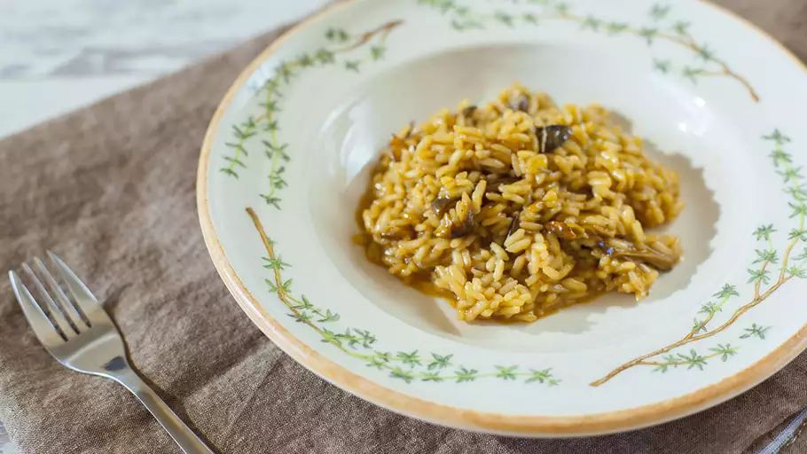

Porcini Mushroom Risotto
Homepage
As classically Italian as you can get, this unadulterated risotto is made in the traditional way and simply flavored with porcini mushrooms, white wine, butter and Parmesan cheese.

Ingredients
- 1 ounce dried porcini mushrooms
- 1 cup hot water
- 1 (32 ounce) carton beef stock
- ¼ cup olive oil, divided
- 3 cloves garlic
- 1 teaspoon dried rosemary
- salt and ground black pepper to taste
- 1 cup white wine, divided
- ¼ cup butter, divided
- 1 shallot, chopped
- 1 ¾ cups Arborio rice
- ⅓ cup grated Parmesan cheese
Directions
- Place porcini mushrooms in a bowl and cover with hot water. Let soak until soft, about 1 hour. Drain, reserving soaking liquid. Squeeze mushrooms to remove excess water and roughly chop.
- Bring beef stock to a boil in a saucepan. Reduce heat to low and cover to keep warm.
- Heat 3 tablespoons oil in a skillet over medium heat. Add garlic cloves; cook until fragrant, about 2 minutes. Add mushrooms; cook and stir until soft, 5 to 6 minutes. Season with rosemary, salt, and pepper. Discard garlic cloves; pour in 1/2 cup wine. Increase heat to medium-high and simmer until wine reduces, 3 to 5 minutes.
- Heat remaining 1 tablespoon oil with 2 tablespoons butter in a saucepan over medium-low heat. Cook and stir shallot until soft, about 3 minutes. Cook and stir Arborio rice until toasted and fragrant, about 3 minutes. Pour in remaining 1/2 cup wine. Simmer until wine is absorbed, about 3 minutes.
- Ladle 1/3 of the warm stock into the saucepan; cook and stir until absorbed. Ladle in remaining stock and reserved soaking liquid in small amounts and cook, stirring constantly, until risotto is tender and creamy, 15 to 18 minutes.
- Remove risotto from the heat; stir in remaining 2 tablespoons butter and Parmesan cheese. Let stand for 3 to 5 minutes before serving.